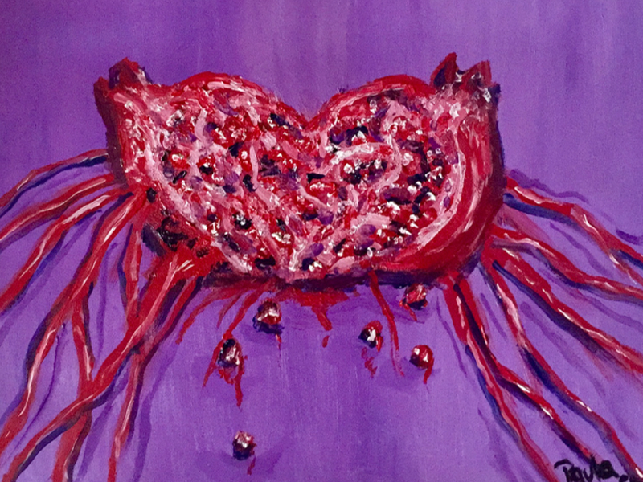
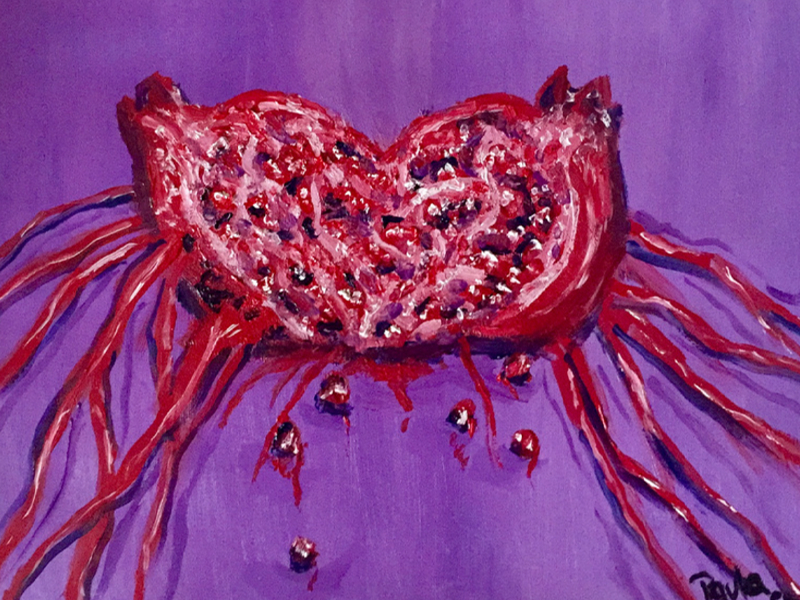
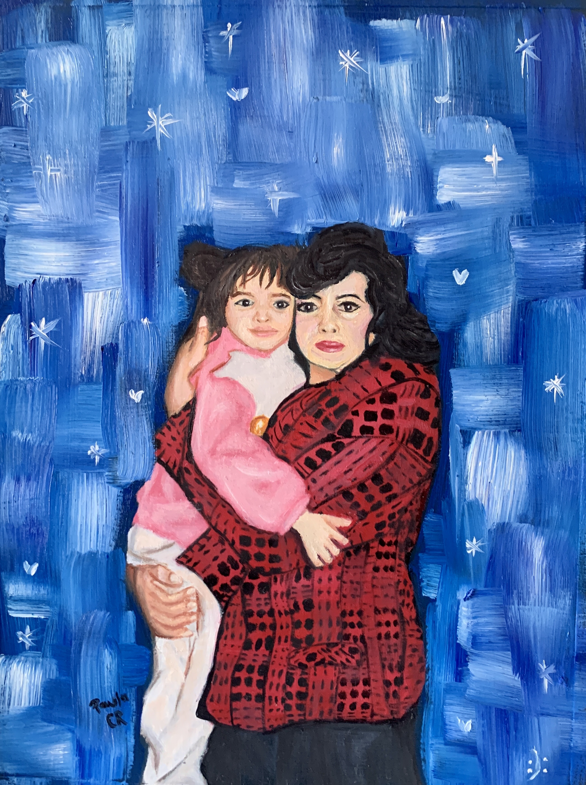
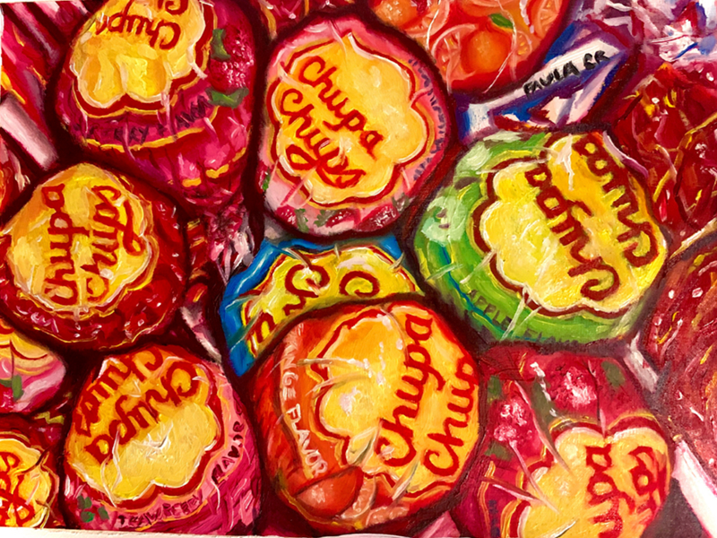
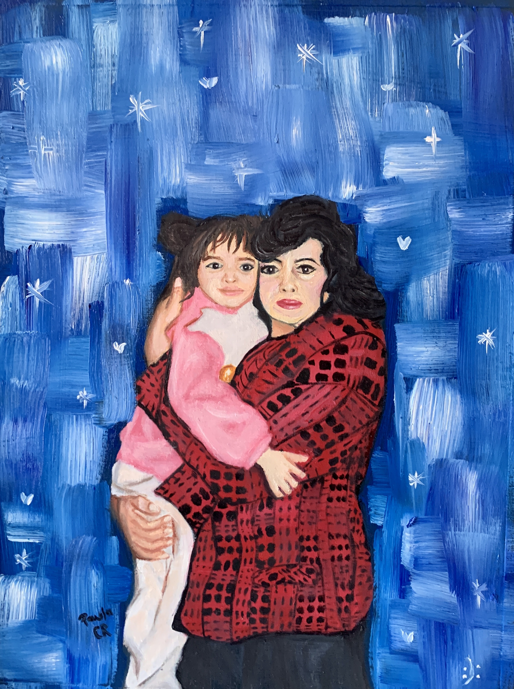
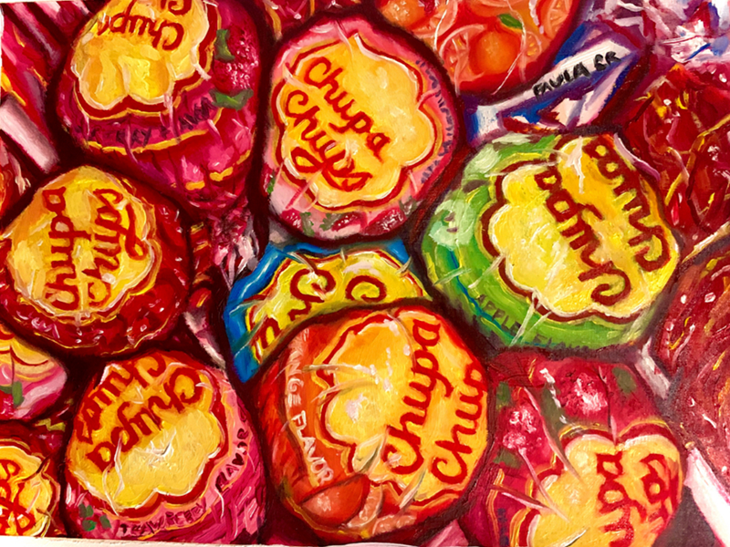

Obras Óleo/Acrílico
 


 



Cólicos explosivos (óleo serie 21.5x 28cm. 2021)
La obra consiste en una serie de 3 pinturas al óleo sobre papel, las cuales reflejan la menstruación desde algunos de los órganos (útero, trompas de Falopio, labios mayores y menores), que están implícitos en este proceso al que la mujer se tiene que enfrentar y que, en ocasiones, suele ser muy doloroso. Gracias al uso de la metáfora, establezco la relación entre el sangrado interno y los cólicos, mostrados como una granada deteriorada y brutalmente expuesta. Tomo referencia de los trabajos de la mexicana Trixia Lara y de la estadounidense Vanessa Tiegs, considerando que estas mismas, al igual que muchas otras artistas mujeres, utilizan sus propios fluidos para la realización de sus obras, por lo que hice uso del jugo de granada para seguir con esta misma línea metafórica.
Una más (acrílico 30x40cm 2021)
Esta pintura representa las numerosas muertes provocadas por el actual virus SRAS-CoV-2. Me autorretrato en dos ocasiones, la primera tomando el papel de la muerte acompañada con la guadaña con la que tradicionalmente se suele ilustrar a este personaje, y en la segunda me encuentro acostada en un ataúd, objeto que reemplaza a la canoa con la que me traslado, en este mismo autorretrato mi cuerpo está putrefacto con sangre saliendo de mi boca. La pintura es de género surrealista con el propósito de exaltar la situación que busco enseñar, como se puede apreciar en la representación de los cráneos que van acompañados de cubrebocas.